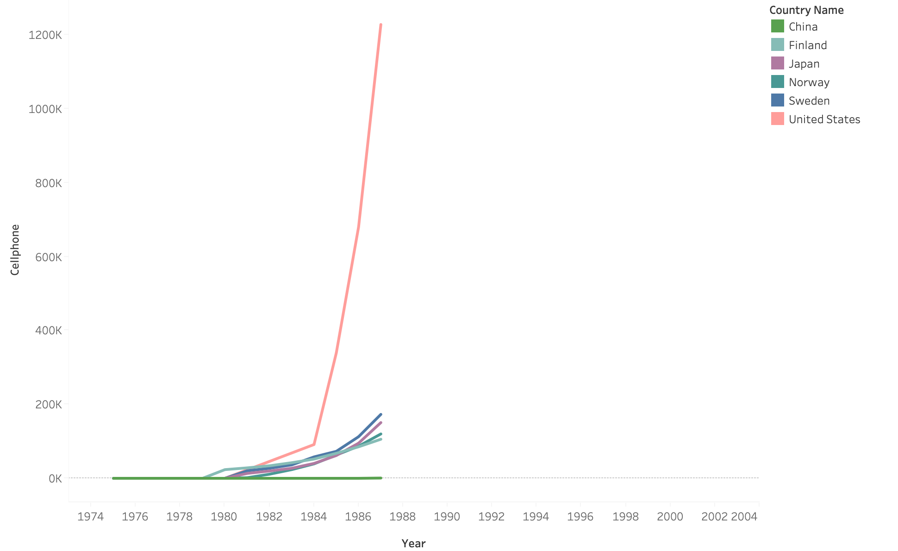

Atlas of
Telecomm- unication Technology
in the 20C
Humanity worldwide is continually developing new technology. Innovations such
as the telephone, TV, and internet permanently change global communication, and
adoption of novel technology is very disproportionate between countries.
Throughout the history of technology adoption documented in our dataset, a
country's GDP is strongly correlated with how quickly it is able to adopt
its use of a technology per capita. A particularly strong trend in the past
hundred years is that the world superpowers Russia, China, and the USA dominate in both GDP and technology adoption.
However, this trend is disrupted in the era of 1980-2010.
Scroll to see how worldwide adoption of communications technology changed
throughout that time.
Dataset:
Historical Adoption of Technology with discussion
here.
1877
Invention of the Telephone
1876 saw the invention of the telephone by Alexander Graham Bell in the USA, who later visited Japan personally in 1877 to demonstrate the technology. [2] From 1876, the USA led the world in telephone use, reaching as many as 180 million telephones in 1980 while the rest of the world adopted telephones much more slowly. In particular, Japan had the next most telephones, at 48 million when the U.S. reached its peak.1920
Invention of the Radio
Radio was patented in 1896 by Guglielmo Marconi, and the world began to develop applications for this novel long-range communication technology. In particular, the 1910s saw the development of entertainment broadcast stations, radio communications for aircraft, and even the early stages of television, using radio to broadcast images. 1980
First commercial radio broadcast
“On November 2, 1920, station KDKA made the nation's first commercial broadcast (a term coined by Conrad himself). They chose that date because it was election day, and the power of radio was proven when people could hear the results of the Harding-Cox presidential race before they read about it in the newspaper.” [1] Information about radio.1991
The Fall of the USSR
The fall of the USSR in 1991 causes a distinct anomaly in the trend of world superpowers dominating technology acquisition. The USSR's radio usage drastically falls post-1990, coinciding with a jump upwards in China's usage.